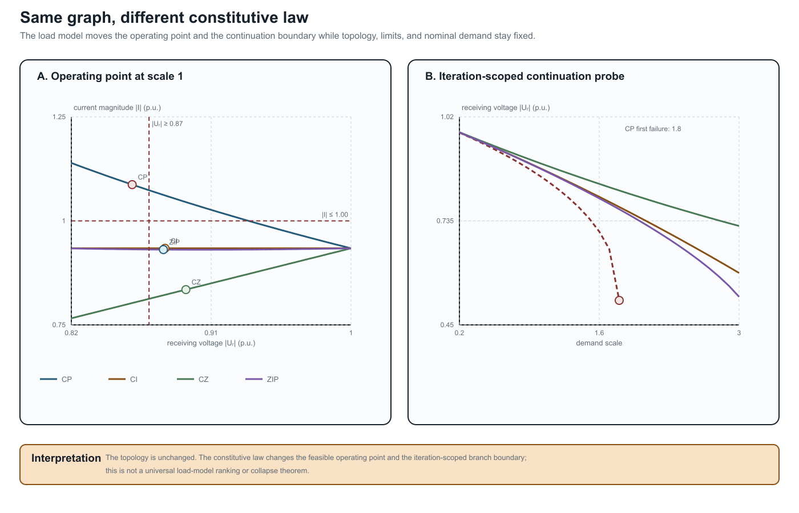

Load models and decision dependence
Page status: constitutive-model reference chapter with scoped numerical load-model, connection-map, and continuation witnesses plus independent reproduction; broader nonlinear and network-level certificates remain future work.
Two networks can have identical buses, edges, terminals, and ratings while defining different decision problems because their loads obey different voltage laws. A graph representation does not identify a load model. The constitutive relation belongs to the factor or asset layer and must be carried through any preservation claim.
Electrical state below means the continuous voltages and currents at an operating point. Equipment status, operating scenario, state-estimator metadata, load-model parameters, and a learned hidden state are separate objects even when software stores them in one state container.
Five common voltage laws
Let $v=|\Delta U|$ be the magnitude seen by one load connection and let $v^{\mathrm{nom}}$ be its declared anchor. For active power, the standard families can be written as
\[\begin{aligned} P_{\mathrm{CP}}(v)&=P^{\mathrm{nom}},\\ P_{\mathrm{CI}}(v)&=P^{\mathrm{nom}}\frac{v}{v^{\mathrm{nom}}},\\ P_{\mathrm{CZ}}(v)&=P^{\mathrm{nom}}\left(\frac{v}{v^{\mathrm{nom}}}\right)^2,\\ P_{\mathrm{ZIP}}(v)&=P^{\mathrm{nom}}\left(\alpha_Z\left(\frac{v}{v^{\mathrm{nom}}}\right)^2+\alpha_I\frac{v}{v^{\mathrm{nom}}}+\alpha_P\right),\\ P_{\mathrm{exp}}(v)&=P^{\mathrm{nom}}\left(\frac{v}{v^{\mathrm{nom}}}\right)^{\gamma_P}. \end{aligned}\]
Reactive power may use its own coefficients or exponent. Constant power does not need $v^{\mathrm{nom}}$; the other laws do. ZIP is a convex combination only when the declared coefficients are nonnegative and sum to one. Integer exponents $0,1,2$ make the exponential family coincide with a ZIP special case, but arbitrary exponents do not.
At $v=v^{\mathrm{nom}}$ the families agree by construction. Away from that point they do not. The same topological graph can therefore produce different currents, losses, voltage margins, active constraints, and optimal decisions.
Why this belongs in a graph-model book
Consider a fixed two-bus graph with series impedance $Z$ and a load at the receiving bus. The power-flow relation is not just the graph incidence; it is
\[U_s-U_r=ZI,\qquad S_r=U_r I^*,\]
together with a law for $S_r$ as a function of $U_r$. Replacing constant power by constant impedance changes the equation graph and the feasible set without changing the bus–branch multigraph. A transformation that preserves only $Y$ or connectivity has not preserved the decision problem unless it also preserves the load relation and the observations that depend on it.
This is a useful counterweight to a common simplification: “the network graph is unchanged, so the OPF is unchanged.” The graph is one layer of the model; the load factor is another.
When a load or generator enters the nodal operator
The factor layer and the nodal operator should not be confused. A constant- impedance load is a one-terminal shunt factor, so a declared formulation may stamp its admittance into a diagonal nodal block. A ZIP or constant-power load may instead be represented by a fixed linear part plus a voltage-dependent compensation current. The same distinction applies to generators: a fixed Norton or dynamic equivalent may contribute a matrix block, while a PV/PQ control, current limit, or inverter control law remains an injection or constraint relation.
OpenDSS provides a useful engineering example. Its normal solution uses a system nodal matrix together with compensation currents from nonlinear power- conversion elements; its direct/admittance option solves with load and generator equivalents included in the matrix. The documentation also notes that loads may be switched to an admittance representation for fault studies and that the fault-study matrix has its own source, generator, and load-current composition [5–8]. This is a solver and study choice, not a claim that the underlying load has become a line edge or that the source graph has changed.
The same warning applies to a two-terminal factor whose terminals become the same resolved node. A fixed linear π section can reduce exactly to a constant- admittance shunt after terminal-map assembly, but that compiled diagonal term is not a self-loop edge and does not erase the source factor, its controls, limits, or provenance. See Multigraphs for expert modelers for the derivation and refusal boundary.
The supplied application-directed distribution equivalent illustrates the same boundary at feeder scale. Its reduction first constructs a nodal equivalent and then aggregates PVs and loads at an equivalent node, with phase-shifting and shunt elements added to preserve the selected study responses. The resulting model is validated for declared power-flow and EMT observations; it is not presented as the unique graph of the original feeder [9].
For this reason, a nodal matrix should be annotated with at least:
- the source factor inventory and terminal/attachment maps;
- the study mode and active device state;
- which load, generator, shunt, or source components were stamped into the matrix;
- which nonlinear or controlled parts remain in injection and constraint maps;
- the operating point or iteration used for any linearization; and
- the observations, limits, decisions, and recovery maps that remain valid.
Decision consequences
Load-model choice becomes especially visible in three regimes:
- voltage regulation and CVR: constant-power loads do not reduce demand when voltage is lowered, while impedance loads do;
- hosting capacity and voltage limits: a voltage-dependent load can partially relieve a binding voltage constraint, changing the reported capacity; and
- weak feeders and collapse: constant-power demand can create a nose point, so a local high-voltage solution may disappear as the load scale increases.
The relevant preservation contract must name the load family, its anchor, phase or connection map, and whether the decision varies load scale, voltage, or model parameters. A numerical result that changes after a load model swap is not necessarily a solver error; it may be the intended change in the physical problem.
Per-conductor and connection semantics
For a multiconductor load, $v$ is not automatically a bus-voltage scalar. The factor must declare whether it uses phase-to-neutral, phase-to-phase, sequence, or another terminal combination. A delta load and a wye load can share the same bus terminals while seeing different voltage coordinates. The load model therefore belongs beside the terminal map, not as an unqualified attribute of a graph vertex.
Likewise, a three-phase load may be balanced in name but still have phase-specific $P_p$ and $Q_p$ values. A balanced positive-sequence view preserves it only when the load relation, grounding, limits, controls, and observations close under the same phase symmetry.
Executable connection-map probe (LOAD-CONNECTION-001)
The generated connection_maps witness in experiments/generated/load-grounding-witnesses.json uses ordered terminals $(a,b,c,n)$ and applies two explicit linear maps to the same balanced bus:
\[T_Y\mathbf v = (V_a-V_n,V_b-V_n,V_c-V_n), \qquad T_\Delta\mathbf v = (V_a-V_b,V_b-V_c,V_c-V_a).\]
The wye observations have unit magnitude, while the delta observations have magnitude $\sqrt{3}$ for the recorded positive-sequence voltage. The bus and graph are unchanged; only the factor's terminal map changes. This is a small structural witness, not a complete unbalanced load-flow or rating model.
Modelling checklist
Before comparing two graph views or deleting a factor, record:
- the load connection and ordered terminal map;
- the active and reactive voltage law;
- the nominal voltage anchor and units;
- phase-specific coefficients or exponents;
- whether the law changes with state, control, or time;
- the voltage and current quantities used in limits; and
- whether the study seeks feasibility, load delivery, hosting capacity, voltage regulation, or a different decision.
The book's existing parallel-line and transformer cases preserve their load equations explicitly. This chapter makes the reason general: constitutive models are part of the representation contract, even when they are invisible in a simple graph drawing.
Scoped numerical witness
The generated artifact experiments/generated/load-grounding-witnesses.json solves one fixed two-bus network under three load laws. With the same source, series impedance, nominal demand, voltage limit $|U_r|\ge0.87$ and current limit $|I|\le1.00$, the recorded high-voltage solutions are:
| Load law | $\lvert U_r\rvert$ | $\lvert I\rvert$ | Voltage limit | Current limit |
|---|---|---|---|---|
| CP | 0.8592 | 1.0872 | fail | fail |
| CI | 0.8803 | 0.9341 | pass | pass |
| CZ | 0.8937 | 0.8348 | pass | pass |
| ZIP (active $(0.4,0.3,0.3)$, reactive $(0.2,0.3,0.5)$) | 0.8792 | 0.9310 | pass | pass |
This is a decision witness, not a universal ranking of load models. It shows that a graph-preserving change of constitutive law can change both feasibility and the active constraint set.

The left panel places the recorded operating points against the same voltage and current limits. The right panel is the finite continuation probe: CP is the first family to fail the declared iteration test, while the other three families remain traceable through scale 3.0. Neither panel is a universal voltage-collapse or load-model-ranking theorem.
The artifact experiments/generated/load-model-independent-reproduction.json repeats the same damped fixed-point calculation with a separate standard-library Python implementation. It reproduces all four recorded rows and their voltage/current limit decisions. This supports reproducibility of the declared scalar fixture; it does not establish global solvability, a universal ranking of load laws, or the adequacy of CP/CI/CZ/ZIP for a particular utility study. The ZIP row uses nonnegative active and reactive coefficients that each sum to one; the two coefficient triples are deliberately distinct to expose that reactive demand need not follow the active-power law.
Continuation probe (LOAD-CONTINUATION-001)
The same scalar fixture also includes a demand-scale continuation in load_continuation. It tracks the previous high-voltage iterate over scales $0.2,0.3,\ldots,3.0$ with damping 0.5. The recorded CP branch converges through scale 1.7 and fails the declared iteration/residual test at scale 1.8; CI, CZ, and the ZIP branch remain converged through scale 3.0. This is useful as a warning that a load-model change can move a numerical branch boundary, but the boundary is solver- and continuation-specific. It is not a global voltage- collapse theorem, and the artifact does not claim that the first failed iterate is the exact saddle-node point.